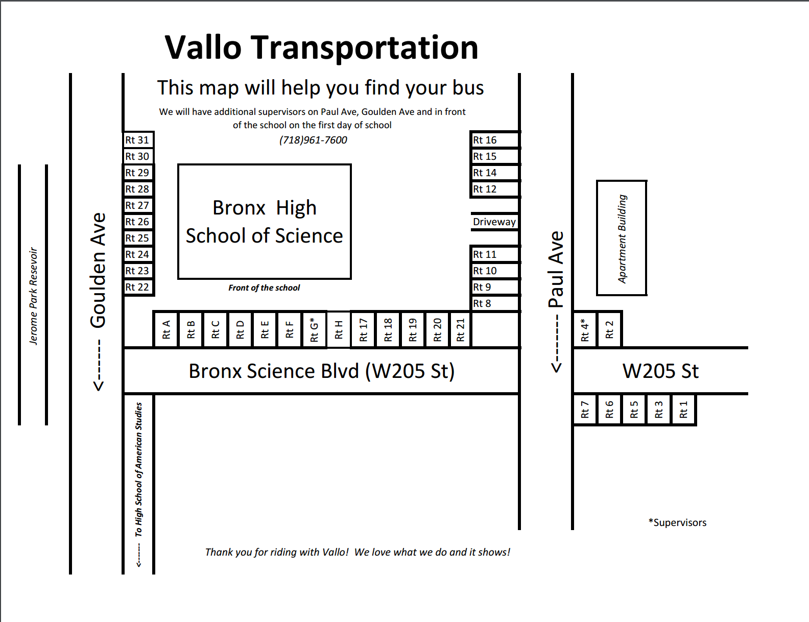

Students about to enter a Vallo Bus
Credits: The Observatory
Q:My bus isn't coming. What should I do?
A:If your bus doesn't come on time, you can contact the vallo office at 718-961-7600 or email them at info@vallotransportation.com
Q:How much is vallo? Is it free?
A:Vallo is a private bus company and therefore there is a fee to it. The later the fee is paid, the more expensive it is. Route information for the following school year will be emailed out in august.
Q: I live in Staten Island. Can vallo make stops near my house?
A: No. Unfortunately vallo only provides their bus services to those living in the queens and manhattan.
Q: I'm not planning on taking vallo. How would I get to school?
A: There is a d train and 4 train located near the school. There are also public buses such as the bx22, bx26, bx28 and bx10 which have bus stations across from the school.
Q:I have badminton practice after school. Does Vallo offer any buses after the 3 o'clock bus?
A:Yes, vallo offers buses at 3 different times after school. There is the 3:45pm bus for after sgi, 5:15pm bus for
after clubs, and the 6:00pm bus for after sports practice. Click on the pdf below to view the routes available after
school. You will need your vallo id to board the afterschool buses.
https://gallery.mailchimp.com/287eda75904563f6155ec90cb/files/BxSciLatebuses.pdf
Q:Where do I find my bus route?
A: Below is the map of where all the bus routes are located in relation to the school.
